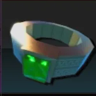

[ SYSTEM DATABASE — BEGINNER MODULE ]
Beginner Guide
Everything you need to know to start your journey!
How the Game Works
- Solo Hunters is a dungeon-crawling RPG where you progress through gates, defeat monsters, and collect loot.
- Each gate has unique enemies, bosses, and rewards. Power, EXP, and Gold increase as you advance.
- Build your character by equipping armor, weapons, and rings, and enhance them with enchantments.
- Red Gates are rare, supercharged dungeons with extra rewards.
Beginner Set Recommendation
 DemonKingDaggers
DemonKingDaggersLegendary Weapon
 IronSet
IronSetArmor

EarthRingV2Rare Ring
Stats: 10 Strength, 8 Defense, 1 Energy, 1 Agility
Class: Any
Class: Any
Enchantment Guide
- Fortune: Focus on this if you need Iron Set (better drop rates).
- Deadly & Sharpshooter: Focus on these if you don't need Iron Set (more damage and crit).
Portals & Gates Explained
Portals are entrances to dungeons, each with unique monsters, bosses, and loot. As you progress, gates become harder and offer better rewards.
Red Gates are rare, supercharged versions with extra EXP and loot.
Gate Info shows recommended power, EXP, and gold for each gate.
Red Gates are rare, supercharged versions with extra EXP and loot.
Gate Info shows recommended power, EXP, and gold for each gate.
Tips for Beginners
- Upgrade your gear as soon as possible for smoother progression.
- Try different classes and builds to find your playstyle.
- Don't ignore rings—they provide valuable bonuses!
- Check Gate Info for recommended power and rewards.